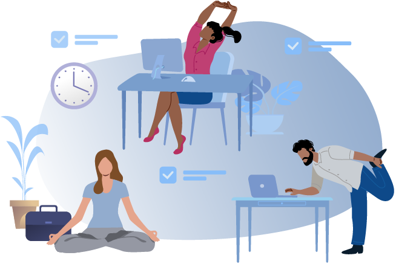
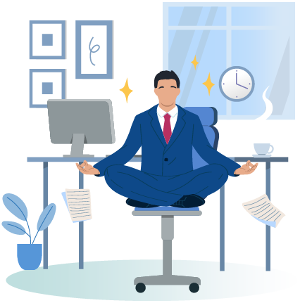
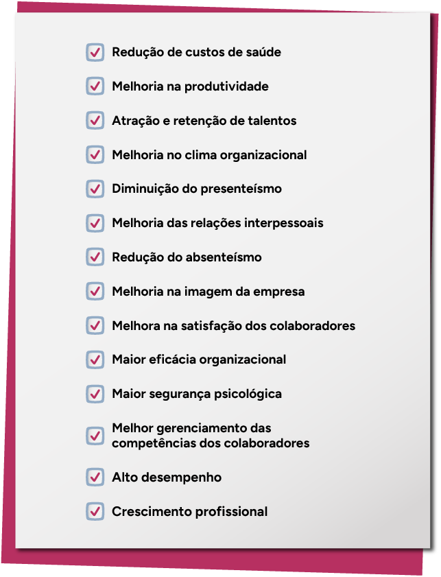

Qualidade de vida no trabalho: conceito, ações e eventos relacionados
Antes de iniciar a leitura deste conteúdo, reflita sobre como a qualidade de vida no trabalho é um assunto extremamente atual, essencial para as pessoas e para o sucesso das organizações.
Principalmente após a pandemia de covid-19, os profissionais com alto talento buscam trabalhar em organizações com culturas voltadas à qualidade de vida no trabalho, pois procuram desenvolver suas carreiras e seus propósitos em equilíbrio com seu bem-estar.
Por outro lado, a empresa que coloca em prática ações de qualidade de vida no trabalho consegue obter diversos benefícios, como a motivação das equipes.
Então, pensar em qualidade de vida no trabalho dentro das organizações não é mais uma escolha, e sim uma necessidade, na qual o RH (recursos humanos) atua de forma estratégica na implementação de ações e programas de qualidade de vida no trabalho.
Fez sentido para você? Então, que tal explorar um pouco mais?
Esta reflexão sobre qualidade de vida no trabalho tem como ponto de partida o conceito de saúde.
De acordo com a Constituição da Organização Mundial da Saúde (OMS), elaborada em 1946, saúde é “[...] um estado de completo bem-estar físico, mental e social, e não consiste apenas na ausência de doença ou de enfermidade” (apud Brasil, 2021).
Considerando que o trabalho é uma parte importante da vida social, é possível compreendê-lo como um dos aspectos relacionados à saúde e também à percepção da qualidade de vida.
Um dos desafios das organizações nos dias de hoje é a atenção à qualidade de vida das pessoas que nela atuam, pois esse fator impacta a satisfação e a motivação dos colaboradores e, consequentemente, refletirá em seus resultados.
Algumas ações podem ser desenvolvidas no ambiente organizacional para garantir condições de trabalho que promovam a melhoria dos fatores relativos à qualidade de vida dos trabalhadores, como você verá a seguir.
Conceitos
O que se entende por qualidade de vida no trabalho (QVT)?
Inicialmente, é possível definir qualidade de vida no trabalho como uma forma de pensamento envolvendo pessoas, trabalho e organizações, destacando a preocupação com o bem-estar do trabalhador e, ao mesmo tempo, a preocupação com a eficácia organizacional. Quando se pensa no bem-estar do colaborador, pensa-se nos pilares social, mental, físico e também financeiro.
Quanto mais a empresa investe e fomenta o desenvolvimento desses pilares, maior é a qualidade de vida no trabalho percebida pelo colaborador e maior é o impacto positivo na eficácia organizacional, o que, por consequência, tende a gerar mais lucros para a empresa.
Clique ou toque para visualizar o conteúdo.
Agora que você compreendeu um pouco melhor os pilares que envolvem o bem-estar do colaborador, fica mais fácil entender como eles geram resultados positivos ou negativos para a empresa (eficácia organizacional).
Por exemplo: se a empresa investir no pilar físico, por meio da oferta de um convênio com uma academia, o colaborador tende a praticar mais exercícios físicos, o que, por consequência, diminui a propensão a doenças físicas. Logo, há menos afastamentos por motivos de doenças, impactando positivamente a eficácia organizacional e a lucratividade da empresa.
Historicamente, a qualidade de vida no ambiente de trabalho era muito voltada para o desenvolvimento do pilar físico: ações de ginástica laboral, desenvolvimento de ambientes ergonômicos, confundindo-se, muitas vezes, com a prevenção a acidentes de trabalho.
Contudo, principalmente depois do que se vivenciou na pandemia de covid-19, tem-se observado nas empresas um aumento significativo de investimentos no pilar mental. Isso porque, ao longo da pandemia, as pessoas tiveram de lidar com diversos sentimentos (medo, insegurança, luto, entre outros), ao mesmo tempo que grande parte das empresas precisou fechar por um tempo, reinventar seus processos e negócios. Além disso, em alguns casos, houve excesso de demanda de trabalho. Tudo isso, gerou uma grande incidência de transtornos mentais e emocionais (depressão, pânico, ansiedade) entre profissionais no Brasil.
Mas por que as empresas precisam reconhecer esse cenário pós-pandemia?
Justamente para ter a consciência da importância de se investir em ações que promovam o pilar mental, pois essa é uma forma eficaz de combater problemas como desmotivação, absenteísmo, estresse, .
Burnout: é um distúrbio emocional com sintomas de exaustão extrema, estresse e esgotamento físico resultante de situações de trabalho desgastantes, que demandam muita competitividade ou responsabilidade, que prejudicam a organização como um todo.
Além disso, após a pandemia, também houve um crescimento de empregos no modelo à distância, no modelo home office e no modelo híbrido. Portanto, a adoção desses modelos também é considerada, em muitas empresas, um investimento em qualidade de vida no trabalho, uma vez que tais modelos permitem maior flexibilidade e aumento do bem-estar para o colaborador, assim como maior retenção dos talentos.
O trabalho é vital para o ser humano. No entanto, tornar os colaboradores mais participativos, utilizando potencialidades e talentos, e dar a eles condições de trabalho adequadas resultará no aumento da sua saúde mental e física. Portanto, é necessário canalizar esforços para o comprometimento humano, na busca da qualidade de vida.
As empresas ainda percebem a busca pela qualidade de vida no trabalho como um custo, não levando em consideração que os gastos com afastamentos e ações trabalhistas são bem maiores e mais impactantes nos seus resultados.
Entretanto, um real investimento na qualidade de vida no trabalho tornará o trabalho mais humanizado, proporcionando um clima organizacional saudável, com a diminuição de acidentes de trabalho, absenteísmos e reclamações trabalhistas.
Além disso, é na empresa onde os trabalhadores passam a maior parte de suas vidas, então é natural pensar em transformar as empresas em lugares mais aprazíveis e saudáveis para a execução dos trabalhos.
As coisas mais valiosas não estão no balanço das empresas. O grande desafio do mundo empresarial é a inovação, e isso somente será conseguido por meio das pessoas (Ludwig apud Ribeiro, 2015).
Portanto, é fácil concluir que o maior patrimônio das organizações são as pessoas.
A qualidade de vida no trabalho tem fator relevante para as empresas em relação à busca da satisfação das necessidades das pessoas, contemplando tanto necessidades e expectativas pessoais quanto fatores ligados às condições de trabalho, aos planos de carreira, às ações focadas em cargos e salários, ao sistema de recompensa, à avaliação de desempenho e ao potencial do profissional.
É possível destacar alguns fatores que impactam diretamente a satisfação e a qualidade de vida no trabalho:
Clique ou toque para visualizar o conteúdo.
Dar importância ao trabalho desempenhado pelo indivíduo na organização e suas consequências.
Exemplo: esclarecer, por meio da utilização de procedimentos-padrão, o que será desenvolvido em cada atividade, detalhando o processo.
A resposta por parte dos superiores é vital para o aperfeiçoamento constante dos trabalhadores.
Exemplo: compete às lideranças, informar aos colaboradores como está o seu desempenho, apontando os pontos fortes e os pontos a serem melhorados em suas atividades.
A partir do momento que a pessoa tem autonomia para tomar decisões, ela passa a se sentir peça importante dentro da organização.
Exemplo: delegar atividades, proporcionado maior responsabilidade por parte dos colaboradores.
Desenvolver políticas claras de crescimento profissional, conforme o cargo desempenhado.
Exemplo: oportunizar crescimento de carreira interna, por meio da abertura de processos de seleção internos.
Pagar salário compatível com a função.
Exemplo: definir política de remuneração de acordo com o plano de cargos e salários.
Tratar a pessoa de forma igualitária sem distinção de raça, credo e cor.
Exemplo: proporcionar ao colaborador uma adaptação à cultura da empresa, por meio de um programa de integração e socialização.
Celebrar as entregas dos colaboradores não somente no final do ano, para que eles se sintam motivados e comprometidos na busca contínua por resultados positivos.
A cultura e a mentalidade da organização têm um papel fundamental na implementação de programas de qualidade. A cultura da empresa pode ser favorável ou não para que ocorra essa implementação.
Em uma perspectiva geral, a maioria das definições de motivação tende a incluir elementos de estimulação, ação e esforço, movimento e persistência, bem como recompensa.
Ao analisar a motivação, é possível perceber e compreender como é importante que as organizações proporcionem um ambiente onde as pessoas possam se sentir bem e confiantes na satisfação das próprias necessidades, ao mesmo tempo que cooperam com o grupo.
Aliás, a satisfação com a vida profissional e a busca por rotinas mais equilibradas e saudáveis contribuíram para a construção de um novo conceito: o de felicidade no trabalho.
A ideia de felicidade no trabalho é um conceito recente, porém extremamente importante, considerando a crescente busca dos profissionais, principalmente das novas gerações, por empresas acolhedoras e que tenham um propósito compartilhado, gerando sentimentos de identificação e pertencimento.
Dessa forma, a felicidade no trabalho é um sentimento individual que está conectado à motivação e ao bem-estar e que acabou, inclusive, tornando-se um indicador ligado à performance.
Estudos recentes comprovam que colaboradores mais felizes são mais produtivos.
Em resumo, com o aumento da competitividade entre as organizações, decorrentes da tecnologia, dos novos produtos e serviços, surge a necessidade da implantação de projetos de qualidade de vida nas empresas, enfatizando o bem-estar do trabalhador.
Ações
Como as organizações podem melhorar a qualidade de vida no ambiente de trabalho?
Como visto até agora, a qualidade de vida no trabalho gera satisfação do colaborador e, como consequência, gera maior lucratividade e desempenho para a organização.
Portanto, investir em ações voltadas para a qualidade de vida no trabalho é excelente para as empresas e para o bem-estar psicológico de todos.
É preciso considerar que as pessoas devem estar em primeiro lugar, pois são elas que constituem a organização.
Para que as ações de qualidade sejam implantadas nas empresas, as pessoas devem estar engajadas no trabalho, pois assim os resultados serão obtidos mais rapidamente. As instabilidades são bem comuns, mas é preciso diminuir a distância entre os picos de euforia e de desânimo.
A seguir, foram elencadas algumas ações que podem ser implementadas nas organizações, trazendo como benefícios a satisfação e o bem-estar dos colaboradores.
Clique ou toque para visualizar o conteúdo.
Agora que você já compreendeu quais são os pilares do bem-estar e também já viu alguns exemplos de ações e resultados esperados, que tal praticar?
Imagine que você esteja atuando em uma empresa que deseja colocar em prática algumas ações para começar a desenvolver a qualidade de vida no trabalho.
A empresa reconhece que é fundamental dar atenção para todos os pilares que sustentam o bem-estar do colaborador.
Dessa forma, inicialmente, você precisa sugerir uma ação para cada um dos pilares.
Agora, chegou a hora de praticar.
Arraste cada característica para o seu respectivo pilar da qualidade de vida.
PILAR SOCIAL
PILAR FINANCEIRO
PILAR FÍSICO
PILAR MENTAL


Programas de qualidade de vida no trabalho
As organizações podem investir na qualidade de vida no trabalho por meio da criação de programas ou projetos de qualidade de vida, visando proporcionar aos seus integrantes um ambiente e um clima organizacional saudável e ético, no qual as pessoas expressem sentimento de pertencimento, por se sentirem valorizadas em relação à satisfação das suas necessidades pessoais e motivadas quanto ao seu crescimento profissional.
Um programa de qualidade de vida no trabalho tem como objetivo promover uma organização mais humanizada, na qual os trabalhadores tenham, simultaneamente, relativo grau de responsabilidade e de autonomia em seu cargo, recebam feedback sobre seu desempenho e realizem tarefas adequadas, variedades e que proporcionem enriquecimento pessoal.
Deve atingir todos os níveis, direcionando esforços para a canalização da energia disponível para o comprometimento humano.
Benefícios dos programas
Ao longo desse conteúdo, você deve ter percebido que são inúmeros os benefícios de investir em ações e programas que promovam a qualidade de vida no trabalho.
Veja um resumo com esses benefícios:
- Redução de custos de saúde
- Melhoria na produtividade
- Atração e retenção de talentos
- Melhoria no clima organizacional
- Diminuição do presenteísmo
- Melhoria das relações interpessoais
- Redução do absenteísmo
- Melhoria na imagem da empresa
- Melhora na satisfação dos colaboradores
- Maior eficácia organizacional
- Maior segurança psicológica
- Melhor gerenciamento das competências dos colaboradores
- Alto desempenho
- Crescimento profissional
- Redução de custos de saúde
- Melhoria na produtividade
- Atração e retenção de talentos
- Melhoria no clima organizacional
- Diminuição do presenteísmo
- Melhoria das relações interpessoais
- Redução do absenteísmo
- Melhoria na imagem da empresa
- Melhora na satisfação dos colaboradores
- Maior eficácia organizacional
- Maior segurança psicológica
- Melhor gerenciamento das competências dos colaboradores
- Alto desempenho
- Crescimento profissional
Você consegue perceber que a grande maioria desses benefícios estão relacionados?
Por exemplo: ao investir em programas de qualidade de vida no trabalho, há uma melhoria na satisfação dos colaboradores, o que consequentemente resulta na melhoria da produtividade. Do mesmo modo, se há uma melhoria das relações interpessoais, o clima organizacional também é impactado positivamente.
Mas e como elaborar um programa de qualidade de vida no trabalho?
Agora que você, futuro técnico em RH, já conhece na teoria a importância e os benefícios de implementar programas de qualidade de vida no trabalho, é importante compreender como implementá-los, ou seja, como colocar em prática essas ações e esses programas.
Veja o passo a passo a seguir:
Clique ou toque para visualizar o conteúdo.
Como exemplo de empresa que utiliza programa de qualidade de vida no trabalho, é possível citar a empresa Unilever.
A Unilever, desde 2015, trabalha os pilares da saúde física, emocional e mental, além de trabalhar a questão do propósito. Para isso, a organização oferece sessões de meditação e biofeedback – técnica de conscientização e relaxamento para controle voluntário de funções fisiológicas –, além de atendimento psicológico para os colaboradores e seus dependentes.
Além disso, destaca-se a criação do Programa Champions de Saúde Mental, baseando-se no que foi vivido na pandemia de covid-19. Nesse programa, implementado na Unilever de diversos países, a empresa busca capacitar funcionários como voluntários, para que estes possam ajudar colegas de trabalho em situações difíceis, sejam elas profissionais, sejam pessoais.
A Unilever também proporcionou formação em mindfulness (técnica que ajuda na atenção plena e no foco) para seus colaboradores.
Prêmio Nacional de Qualidade de Vida (PNQV)
A ABQV (Associação Brasileira de Qualidade de Vida) premia anualmente algumas empresas pela implementação de programas de qualidade nos seus processos de gestão. A seguir, conheça um pouco mais sobre esses prêmios.
O principal desafio do Prêmio Nacional de Qualidade de Vida (PNQV) é reconhecer as melhores práticas dos programas, com repercussão na saúde, na segurança e no bem-estar dos trabalhadores. A partir de 2014, além do modelo de excelência da gestão da FNQ (Fundação Nacional da Qualidade), o PNQV passa a adotar o modelo de ambiente de trabalho saudável da OMS como fundamento para avaliação.
Já a partir de 2022, o entendimento sobre os temas ESG (ambiental, social e governança) e ODS (objetivos de desenvolvimento sustentável) passaram a ser enfatizados na avaliação do prêmio, a fim de provocar reflexões mais aprofundadas nas empresas avaliadas, buscando compreender onde esses temas se fazem presentes no cotidiano de prevenção e promoção de saúde e bem-estar.
Dessa forma, o PNQV passou a ser também um importante instrumento de conscientização e educação, para as empresas avaliadas, sobre a importância da sustentabilidade e da responsabilidade social.
Ao analisar os instrumentos de avaliação de qualidade de vida no trabalho, identifica-se que as organizações utilizam vários deles, tanto para avaliação genérica de qualidade de vida quanto para avaliação específica de um dos componentes da qualidade de vida. No entanto, pode-se observar que não há um tratamento metodológico desses dados que possa resultar em um indicador conclusivo.
Como contribuição, sugere-se um modelo de avaliação de qualidade de vida no trabalho que contempla três dimensões específicas (a do indivíduo, a da organização e a da interação entre indivíduo e organização), referente à incorporação do conceito de qualidade de vida no trabalho em todas as práticas de RH.
| Dimensão voltada para o indivíduo | Dimensão voltada para a organização | Dimensão individual X organizacional |
|---|---|---|
| Contempla mais ações voltadas para a saúde e o bem-estar de cada pessoa da organização. |
Refere-se aos resultados organizacionais decorrentes. Ações realizadas individualmente, dentro dos programas de qualidade de vida no trabalho. |
Engloba indicadores empresariais como índice de produtividade, turnover, absenteísmo e vários aspectos abordados na pesquisa de clima organizacional que refletem a percepção dos funcionários no conjunto da organização. |
Fonte: Adaptado de Lacaz (2000)
É preciso considerar alguns pontos importantes, como remuneração compatível, desenvolvimento e aproveitamento das habilidades e competência individuais, estilo de liderança e condições seguras e adequadas de trabalho.
O modelo visa integrar o conceito de qualidade de vida com todas as práticas organizacionais, gerando uma relação de equilíbrio na qual os dois lados, empregado e organização, possam ter suas expectativas satisfeitas.
Em resumo, os programas de qualidade de vida no trabalho têm como objetivo oferecer benefícios para melhorar a qualidade do ambiente organizacional e que auxiliem no desenvolvimento dos seus integrantes, tanto na dimensão pessoal quanto na profissional.
Em sua atuação profissional, você auxiliará esses processos nas empresas, por isso é muito importante dominar este conteúdo.
Verifique, então, alguns exemplos de programas de qualidade de vida no trabalho.
Clique ou toque para visualizar o conteúdo.

Agora que você conhece algumas opções de programas de qualidade de vida no trabalho, é capaz perceber a importância de promover programas de incentivo que cuidem de todos os pilares que afetam a qualidade de vida no trabalho. Ou seja, os profissionais de RH precisam estar atentos a todas as necessidades dos colaboradores.
Sendo assim, pode-se dizer que os programas de qualidade de vida no trabalho, mais do que nunca, são essenciais para as empresas e para os seus profissionais.